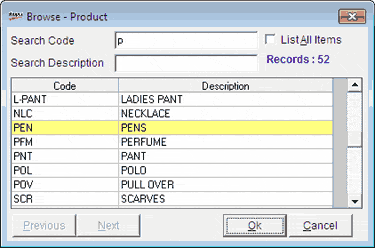

The Browse window is as shown. The window changes depending on the selected attribute. All the records having matching entry in the Item Master are displayed in the Browse.

List All Items: Select to display all the items catalogued in General Lookup without checking for the existence in the item master.
Note: The field List All Items is displayed only while browsing for Product (Class1), Brand (Class2) and any of the Analysis codes.
Search Code: Enter the attribute code to select the required value. If you enter the first part of the code, the selection bar is placed at the first matching value in the grid.
Search Description: Enter the description to select the required value. If you enter the first part of the description, the selection bar is placed at the first matching value in the grid.
The grid displays all the values available to fill the attribute. Click to select any row. The total number of records selected is displayed on the Browse window above the grid.